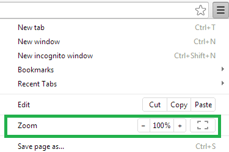
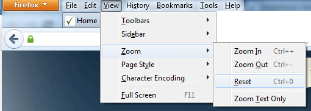
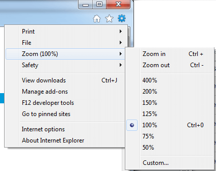
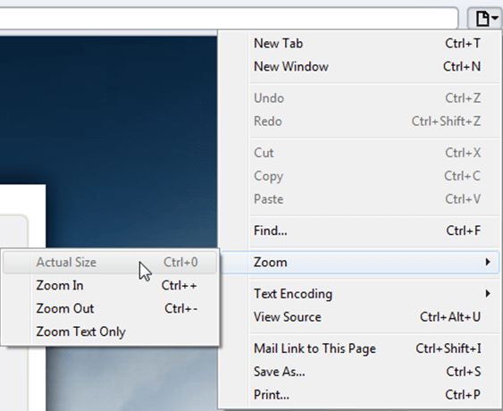
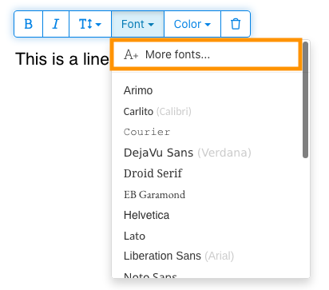
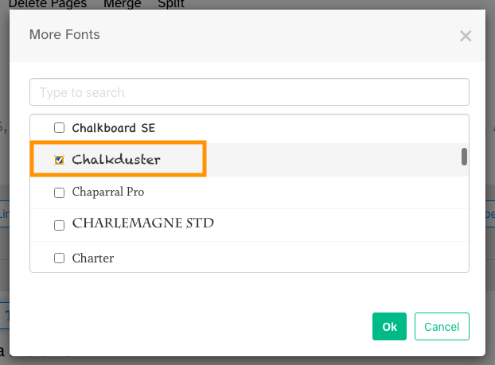
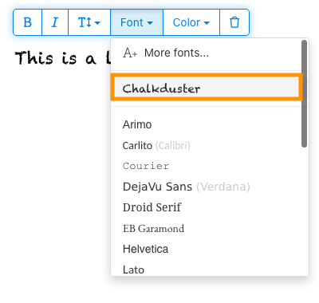

![Sejda.com logo]()
Help & Knowledge Base
Customizing Result File Names
Special keywords can be used as placeholders in the output file names, to be replaced with dynamic values during the execution.
A trivial example is prefixing each document with the page number, when splitting.
[CURRENTPAGE]
A reference to the current page number in the input document.
Example: [CURRENTPAGE###] will generate filesnames like 001.pdf, 002.pdf.
Example: [CURRENTPAGE##] generates 01.pdf, 02.pdf, etc.
[TIMESTAMP]
Ensures unique output filenames, being replaced with current date & time.
[FILENUMBER]
Ensures unique output filenames, replaced with a file number according to the output order.
Example: [FILENUMBER###] generates 001, 002
Example: [FILENUMBER13] starts with the counter at 13, generating 13, 14,
etc.
[BASENAME]
Does not ensure unique output filenames, and it must be used together with other placeholders ensuring unique names. It is replaced with original name of the input document, without the extension.
Example: [CURRENTPAGE]_[BASENAME] would generate 1_input-file.pdf, 3_input-file.pdf,
etc.
[BOOKMARK_NAME]
This pattern is replaced by current bookmark's name. Only applicable in the "Split by bookmarks" tool.
[BOOKMARK_NAME_STRICT]
Same behavior as [BOOKMARK_NAME] with the difference that non-alphanumberic characters are
removed.
Example: [CURRENTPAGE]-[BOOKMARK_NAME] would generate 1-Introduction.pdf, 4-Chapter
1.pdf, etc.
[TEXT]
This pattern is applicable only in the "Split by text" tool. It is replaced with the text found in the page area selected.
Example: [CURRENTPAGE]-[TEXT] would generate 1-Invoice 3456789.pdf, 4-Invoice
234567.pdf, etc.
[TEXT1], [TEXT2], etc.
This pattern is applicable only in the "Rename" tool. It is replaced with the text found in the selected area.
Example: [TEXT2]-[TEXT1] would generate John Doe-Invoice 3456789.pdf, Jane Doe-Invoice
234567.pdf, etc.
Sejda Desktop Enterprise Install
To deploy Sejda Desktop in an enterprise environment using a pre-configured volume license key use this command:
msiexec /i sejda-desktop_x.y.z_x64.msi LICENSE_KEY="1234-ABCD-1234-ABCD"
Any options provided will be configured machine-wide and will apply for all users on the system.
| LICENSE_KEY | License key | LICENSE_KEY="1234-ABCD-1234-ABCD" |
| LOCALE | UI language | en, es, de, fr,it or pt |
| UPDATE_CHECK | Disables checking for new versions | UPDATE_CHECK="false" |
| DISABLED_FEATURES | List of features to be disabled | DISABLED_FEATURES="edit.whiteout" |
| EULA_ACCEPTED | Accept EULA and no longer prompt on first use | EULA_ACCEPTED="true" |
| AUTO_REPORT_ERRORS | Configure automated error reporting and no longer prompt on first use | AUTO_REPORT_ERRORS="false" |
Resetting Browser Zoom
Choosing a zoom level of anything other than 100% (the default) can cause problems in pages where we render PDF pages.
If you are warned about it, reset the browser zoom to 100%.
The quickest way to return your browser to this zoom setting is to use the keyboard shortcut Ctrl + 0 on Windows or Cmd + 0 on Mac.
Additional browser-specific instructions for changing the zoom level are detailed below.
Chrome

Firefox

Internet Explorer

Safari

Sejda Desktop - Loading local fonts failed
Sejda Desktop fails to load the fonts installed on your system?
Windows 7: Please install "Platform update for Windows 7 SP1": https://support.microsoft.com/en-us/kb/2670838.
Linux: Please install libfontconfig-dev: sudo apt-get install libfontconfig-dev
Sejda Desktop - Add your fonts
Sejda Desktop can use your custom fonts when editing PDF documents.
1) Install the font on your system. See help for Windows or Mac.
2) Open Sejda Desktop, then open a PDF document with the Editor.
3) Type text on the page. From the context menu select "Fonts > More fonts".

4) Select the font you would like to use and click "OK".

5) Click on the newly added font to use it for your text.

How long does it take for a refund to be processed?
It can take anywhere from 5-10 business days for a refund to show up on your bank account.
In some cases, the refund might be processed as a reversal, meaning the original payment will disappear from the account statement entirely and the balance will reflect as though the charge never occurred.
If you do not see the refund after 10 business days and you are still seeing the original charge on your bank statement, please reach out to support for more information.
How can you delete your FastSpring data?
If you've placed an order through FastSpring, our online authorized reseller & merchant of record, you can send your data erasure request to privacy@fastspring.com.
Malwarebytes interfering with Sejda Desktop?
Do you have Malwarebytes installed?
Please try temporarily turning Malwarebytes off and see if that solves the problem: Instructions here
You can report this problem with Malwarebytes: Report false positive
Could not convert: Page uses CAPTCHAs
The website you are trying to convert uses CAPTCHAs to block automated robots (such as our converter) from visiting their website.
There is no work around this.
See if the browser extension helps with your use-case:
HTML to PDF browser-extension
Install Linux OCR engine
Sejda Desktop does not ship with an embedded OCR engine on Linux, it uses the one available on the system.
To install an OCR engine, please run the following command:
sudo apt-get install -y tesseract-ocr tesseract-ocr-all
Once the command completes, return to Sejda Desktop and run your OCR task again.
Install Linux OCR language data
The OCR engine is installed successfully, but it is missing language data.
To install language data, please run the following command:
sudo apt-get install -y tesseract-ocr-all
About 667M of data will be downloaded and installed.
Once the command completes, return to Sejda Desktop and run your OCR task again.
Estão me pedindo para digitar a senha do proprietário
Por que estão me pedindo uma senha?
Alguns documentos PDF vêm com configurações de segurança que restringem certas ações, como impressão, cópia de texto, edição ou adição de anotações. Essas restrições são implementadas pelo criador do documento para controlar como o conteúdo é usado e compartilhado.
Quando detectamos que um PDF possui essas restrições, solicitamos a senha do proprietário. Digitar esta senha desbloqueia o documento e concede acesso total a todos os recursos e permissões. Esta etapa garante que apenas indivíduos autorizados possam modificar ou remover as restrições definidas pelo autor original.
O que é uma senha de proprietário?
Uma senha de proprietário é definida pelo criador do PDF para impedir alterações não autorizadas no documento. Difere de uma senha de usuário, que restringe a abertura do documento por completo. Se você tem a senha do proprietário, significa que você tem permissão total para o documento.
E se eu não tiver a senha do proprietário?
Se você não tiver a senha do proprietário, continuará tendo acesso limitado com base nas restrições definidas no PDF.
Para obter acesso total, obtenha uma versão desbloqueada do documento.
Como posso evitar ter que digitar repetidamente a senha do proprietário a cada vez?
Você pode usar uma ferramenta de desbloqueio de PDF para remover as restrições de permissão do seu documento. Você só faz isso uma vez. Então você não será mais solicitado a inserir a senha do proprietário para o documento.
Abra o documento PDF no Google Chrome, pressione Ctrl+P para imprimir, escolha "Destino" como "Salvar como PDF" no canto superior direito e clique em "Salvar".
A compra de um plano pago resolverá o problema?
Não, você ainda será solicitado a inserir a senha do proprietário, mesmo que tenha um plano pago conosco.
Vocês podem me dizer a senha do proprietário?
Não, nós não sabemos a senha do proprietário dos seus documentos. A senha do proprietário foi escolhida pela pessoa que criou seu documento e é diferente da sua senha de login.
Não consigo editar ou converter um documento digitalizado
Por que documentos digitalizados não podem ser editados ou convertidos?
Quando você digitaliza um documento físico para criar um PDF, o scanner captura uma imagem de cada página. Este processo converte o texto, os gráficos e o layout em um único arquivo de imagem incorporado no PDF. Ao contrário dos PDFs padrão, onde o texto é armazenado como caracteres e linhas individuais que podem ser selecionados, copiados e editados, os PDFs digitalizados tratam cada página como uma imagem grande.
Como o texto em um PDF digitalizado faz parte de uma imagem, os editores de PDF não podem reconhecê-lo ou modificá-lo diretamente. O software vê apenas uma coleção de pixels, não letras ou palavras distinguíveis. Isso torna impossível editar parágrafos de texto ou fazer alterações como você faria em um documento PDF regular baseado em texto.
Como determinar se um documento é uma digitalização?
Uma maneira de determinar se um PDF é uma imagem digitalizada é abri-lo com um visualizador de PDF e tentar selecionar o texto com o mouse. Em um PDF editável, você pode destacar o texto clicando e arrastando o cursor sobre ele. Se você não conseguir selecionar nenhum texto e a página inteira se comportar como uma única imagem, provavelmente é um documento digitalizado.
Observação: Alguns documentos digitalizados são processados com Reconhecimento Óptico de Caracteres (OCR) para se tornarem digitalizações "pesquisáveis", onde o texto pode ser selecionado e pesquisado. No entanto, esses documentos ainda são digitalizações e não podem ser editados ou convertidos como PDFs padrão.
Tenho certeza que meu documento não é uma digitalização
Alguns documentos se assemelham a digitalizações porque seu conteúdo é incorporado como imagens em cada página. Isso pode acontecer com documentos criados a partir de capturas de tela ou quando o texto foi convertido em contornos em vez de ser incorporado como texto editável.
Embora tecnicamente não sejam digitalizações, funcionam de maneira semelhante. Infelizmente, também não oferecemos suporte à edição ou conversão desses tipos de documentos.
A compra de um plano pago resolverá o problema?
Não, fazer upgrade para um plano pago não permitirá que você edite ou converta documentos digitalizados. A edição ou conversão de digitalizações não é suportada, independentemente do seu nível de assinatura.
Tenho certeza de que consegui editar este documento anteriormente
Nunca oferecemos suporte à edição ou conversão de documentos digitalizados. Se você conseguiu editar o documento antes, é provável que ele tenha sido exportado para PDF de maneira diferente do documento atual.
O Sejda Desktop falha devido a permissões
Existem 2 causas comuns para este erro: permissões insuficientes ou interferência do antivírus.
Permissões insuficientes: Você pode precisar executar o Sejda Desktop com privilégios de Administrador. Clique com o botão direito no aplicativo e escolha "Mais" > "Executar como administrador".
Antivírus ou software de segurança: Tente desativar temporariamente seu antivírus para verificar se isso ajuda a resolver o problema.
Instalar Sejda Desktop no Chromebook
O Sejda Desktop pode ser instalado no Chromebook usando o ambiente de desenvolvimento Linux (conhecido como Crostini).
Requisitos
Seu Chromebook deve estar com o ambiente de desenvolvimento Linux ativado. Para ativar, vá em Settings → Advanced → Developers → Linux development environment e siga as instruções.
Nem todos os Chromebooks suportam Linux. Modelos mais antigos ou básicos podem não ter esta opção disponível.
1. Baixar a versão Linux (.deb)
2. Instalar no Terminal
Abra o app Terminal do Linux e execute:
cd ~/Downloads sudo dpkg -i sejda-desktop_*.deb sudo apt -f install
3. Executar
sejda-desktop
Ou inicie a partir da pasta de apps Linux no seu inicializador do ChromeOS.
Resolução de problemas: o app não abre
Se o Sejda Desktop não aparecer ou não abrir, instale as bibliotecas GUI ausentes:
sudo apt install -y libgconf-2-4 libatk1.0-0 libatk-bridge2.0-0
Recursos de OCR
O Sejda Desktop no Linux usa o motor de OCR do sistema.
Veja Instalar motor de OCR Linux para instruções